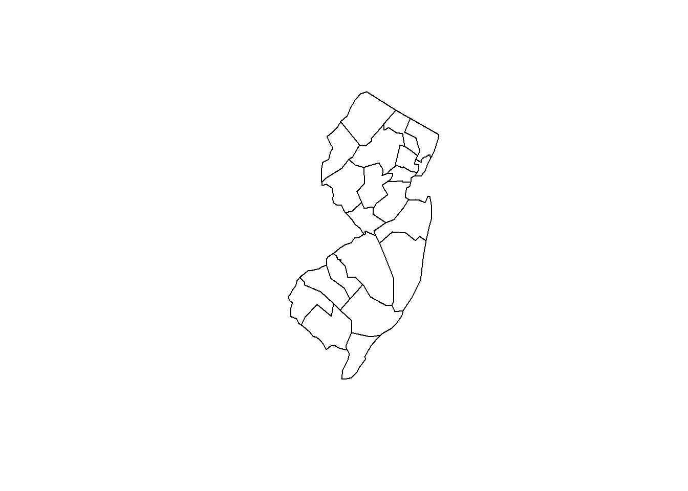
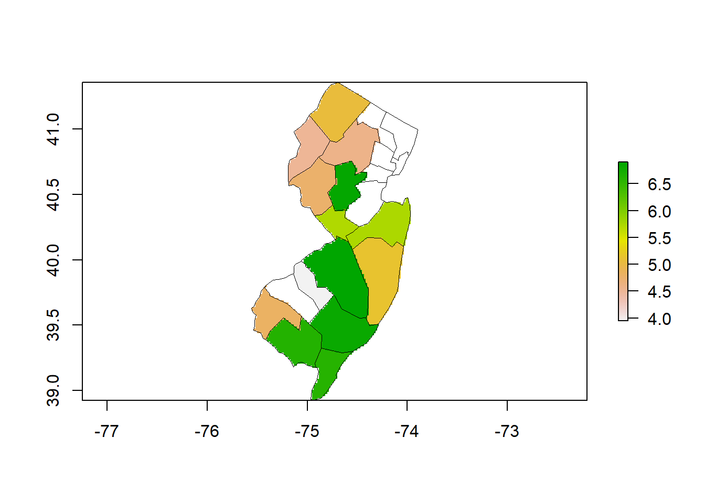

Chapter 5 Geo-matching the Dataset
5.1 Technical steps - Geo-matching and Rasterize in R
Step 1 - Load the soil data and soil map for NJ
# Generate NJ shapefile '.shp' file using the tigris pakage
library(tigris)
options(tigris_use_cache = TRUE)
library(rgdal)
library(raster)
library(sp)## Geometry set for 21 features
## Geometry type: MULTIPOLYGON
## Dimension: XY
## Bounding box: xmin: -75.55945 ymin: 38.92852 xmax: -73.89398 ymax: 41.35742
## Geodetic CRS: NAD83
## First 5 geometries:
5.4 Step 4 - Rasterize and export the results as geotiff
# Convert the layer to raster, to comply with the deliverables specifications.
pred.nj <- rasterize(nj.shp, covs, "OCSKGM")
plot(pred.nj)
lines(nj.shp, lwd=0.3)
# extract values from covariates to the soil points
nj.SOC <- extract(x = covs, y = nj.Data, sp = TRUE)
summary(nj.SOC@data)## X.1 id SOC CRFVOL
## Min. : 1.00 Length:188 Min. : 22.96 Min. : 0.0000
## 1st Qu.: 47.75 Class :character 1st Qu.: 142.07 1st Qu.: 0.0000
## Median : 94.50 Mode :character Median : 299.02 Median : 0.6363
## Mean : 94.50 Mean : 437.62 Mean : 3.5593
## 3rd Qu.:141.25 3rd Qu.: 770.85 3rd Qu.: 2.7634
## Max. :188.00 Max. :1000.00 Max. :45.6198
## OCSKGM annualPET aridityIndexThornthwaite
## Min. :3.134 Min. : 759.3 Min. : 8.372
## 1st Qu.:4.956 1st Qu.: 883.1 1st Qu.:14.620
## Median :5.700 Median : 933.8 Median :17.407
## Mean :5.669 Mean : 928.1 Mean :17.426
## 3rd Qu.:6.647 3rd Qu.: 995.1 3rd Qu.:19.996
## Max. :6.908 Max. :1032.5 Max. :28.434
## climaticMoistureIndex continentality embergerQ growingDegDays0
## Min. :0.01279 Min. :21.88 Min. :104.9 Min. :4379
## 1st Qu.:0.15834 1st Qu.:22.96 1st Qu.:126.0 1st Qu.:5115
## Median :0.19868 Median :23.57 Median :130.8 Median :5393
## Mean :0.20279 Mean :23.68 Mean :131.5 Mean :5300
## 3rd Qu.:0.24609 3rd Qu.:24.67 3rd Qu.:134.8 3rd Qu.:5507
## Max. :0.34004 Max. :25.17 Max. :158.4 Max. :5653
## growingDegDays5 maxTempColdest meanTempColdest meanTempWarmest
## Min. :2934 Min. :3.450 Min. :-0.425 Min. :24.48
## 1st Qu.:3462 1st Qu.:5.650 1st Qu.: 1.900 1st Qu.:26.39
## Median :3631 Median :6.688 Median : 3.400 Median :26.61
## Mean :3587 Mean :6.270 Mean : 2.871 Mean :26.55
## 3rd Qu.:3737 3rd Qu.:7.000 3rd Qu.: 3.800 3rd Qu.:26.96
## Max. :3873 Max. :7.275 Max. : 4.575 Max. :27.75
## minTempWarmest monthCountByTemp10 PETColdestQuarter PETDriestQuarter
## Min. :19.67 Min. :7.000 Min. :22.56 Min. :25.87
## 1st Qu.:21.83 1st Qu.:7.000 1st Qu.:25.41 1st Qu.:37.27
## Median :23.20 Median :8.000 Median :25.81 Median :57.12
## Mean :22.71 Mean :7.739 Mean :25.84 Mean :51.05
## 3rd Qu.:23.48 3rd Qu.:8.000 3rd Qu.:26.52 3rd Qu.:63.02
## Max. :24.20 Max. :8.000 Max. :28.34 Max. :69.67
## PETseasonality PETWarmestQuarter PETWettestQuarter thermicityIndex
## Min. :3265 Min. :104.3 Min. : 69.0 Min. :184.4
## 1st Qu.:4097 1st Qu.:125.7 1st Qu.:119.5 1st Qu.:245.2
## Median :4497 Median :134.8 Median :131.3 Median :263.1
## Mean :4518 Mean :134.6 Mean :126.3 Mean :257.2
## 3rd Qu.:5073 3rd Qu.:147.2 3rd Qu.:144.5 3rd Qu.:271.8
## Max. :5257 Max. :150.8 Max. :148.4 Max. :287.0
## annualPET aridityIndexThornthwaite climaticMoistureIndex
## Min. : 759.3 Min. : 8.372 Min. :0.01279
## 1st Qu.: 883.1 1st Qu.:14.620 1st Qu.:0.15834
## Median : 933.8 Median :17.407 Median :0.19868
## Mean : 928.1 Mean :17.426 Mean :0.20279
## 3rd Qu.: 995.1 3rd Qu.:19.996 3rd Qu.:0.24609
## Max. :1032.5 Max. :28.434 Max. :0.34004
## continentality embergerQ growingDegDays0 growingDegDays5
## Min. :21.88 Min. :104.9 Min. :4379 Min. :2934
## 1st Qu.:22.96 1st Qu.:126.0 1st Qu.:5115 1st Qu.:3462
## Median :23.57 Median :130.8 Median :5393 Median :3631
## Mean :23.68 Mean :131.5 Mean :5300 Mean :3587
## 3rd Qu.:24.67 3rd Qu.:134.8 3rd Qu.:5507 3rd Qu.:3737
## Max. :25.17 Max. :158.4 Max. :5653 Max. :3873
## maxTempColdest meanTempColdest meanTempWarmest minTempWarmest
## Min. :3.450 Min. :-0.425 Min. :24.48 Min. :19.67
## 1st Qu.:5.650 1st Qu.: 1.900 1st Qu.:26.39 1st Qu.:21.83
## Median :6.688 Median : 3.400 Median :26.61 Median :23.20
## Mean :6.270 Mean : 2.871 Mean :26.55 Mean :22.71
## 3rd Qu.:7.000 3rd Qu.: 3.800 3rd Qu.:26.96 3rd Qu.:23.48
## Max. :7.275 Max. : 4.575 Max. :27.75 Max. :24.20
## monthCountByTemp10 PETColdestQuarter PETDriestQuarter PETseasonality
## Min. :7.000 Min. :22.56 Min. :25.87 Min. :3265
## 1st Qu.:7.000 1st Qu.:25.41 1st Qu.:37.27 1st Qu.:4097
## Median :8.000 Median :25.81 Median :57.12 Median :4497
## Mean :7.739 Mean :25.84 Mean :51.05 Mean :4518
## 3rd Qu.:8.000 3rd Qu.:26.52 3rd Qu.:63.02 3rd Qu.:5073
## Max. :8.000 Max. :28.34 Max. :69.67 Max. :5257
## PETWarmestQuarter PETWettestQuarter thermicityIndex
## Min. :104.3 Min. : 69.0 Min. :184.4
## 1st Qu.:125.7 1st Qu.:119.5 1st Qu.:245.2
## Median :134.8 Median :131.3 Median :263.1
## Mean :134.6 Mean :126.3 Mean :257.2
## 3rd Qu.:147.2 3rd Qu.:144.5 3rd Qu.:271.8
## Max. :150.8 Max. :148.4 Max. :287.0